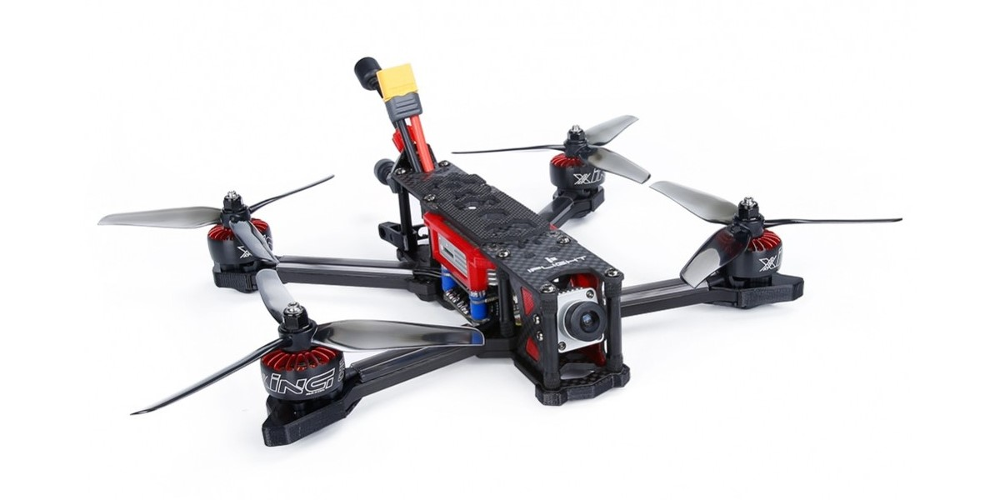
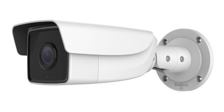
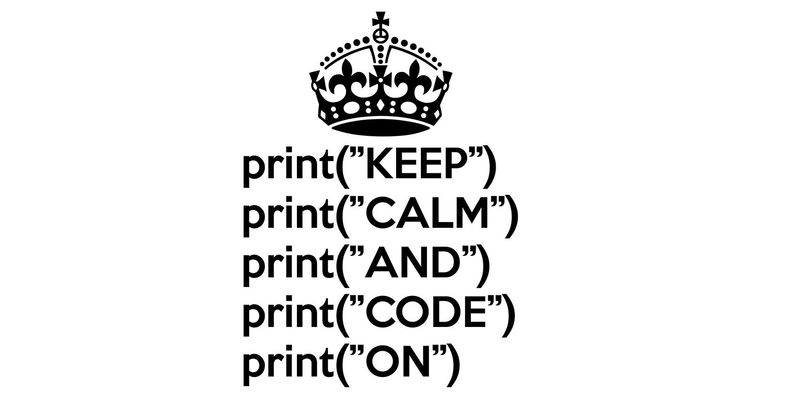

FPV Racing Drone Capstone
My senior design capstone project was to build a first person view racing drone from the ground up using minimal
off the shelf components. My team included four electrical and computer engineers and we divided the project into
four subsystems: navigation, power, sensors, and communication. I was the project lead and responsible for the
navigation subsystem. This subsystem served as the brains of the drone, consisting of the software required to fly
the drone including six PID controllers for basic autonomous response. The program received data from the sensor
subsystem and tracked the position and orientation of the drone over time. This combined with input from the radio
controller was used to generate an output motor voltage for the four electronic speed controllers. The PID controllers
were used to make small autonomous adjustments to account for cross-wind and other deviations form expected trajectory
allowing the drone to hover in place without user input.
Pabu Stock Interface
The concept behind this project was to create a stock tracker application that incorporated current sentiment from
tweets mentioning the company. To achieve this we used four APIs. The first one retrived stock prices for a given
company over a variable time window. The second grabbed tweets that mentioned a company's name or stock ID. The third
used an algorithm to determine the prevelant sentiments of the available tweets. And finally we incorported a news API
to give the latest market headlines.
Rubik's Cube Simulator
This project started as a simple time killer over the summer of 2019. Shortly after I learned how to solve
a Rubik’s cube, I came up with the idea of teaching a basic C++ program to recursively solve a Rubik’s cube
using the most basic steps (also known as the daisy method). While a fun project, I've never been fully
satisfied with it. At the moment, it outputs the current state of the cube via ‘cout’ statements which,
while functional for debugging, aren’t so pretty. I had no experience with creating visual outputs in C++ at
the time, much less a 3D isometric view with animations, but I recently took a computer graphics class and
would love to apply what I learned to the project.

Edge Compatable Pedestrian Tracker
Over the summer of 2020 I had a great opportunity to work as an intern on a Machine Learning team
designing AI vision applications for retail security. My goal was to modify Intel’s OpenVino Machine
Learning Pedestrian Tracker demo to operate on a proprietary AI-Oriented edge-compute device integrated
into a security camera. I used the experience to create a loose guide for converting existing code and
libraries to function on the edge-compute device including several troubleshooting and debugging examples.
The demo was also modified to include a rudimentary loitering detector which automatically defined regions
of interest based on pedestrian movement. The project was conducted using x86 Linux virtual machines and
the native ARM based Linux environment of the edge-compute device. The entire process was incredibly
tedious but super fun to work on and I learned a ton about Linux, cmake, library management, and machine
learning.

More to Come!
My intent is to keep this page up to date with various new projects and experiences going forward as a reference for potential employers.
Last Updated:
09/10/2021